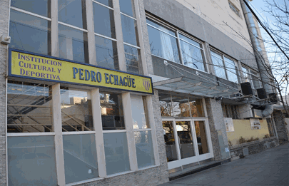
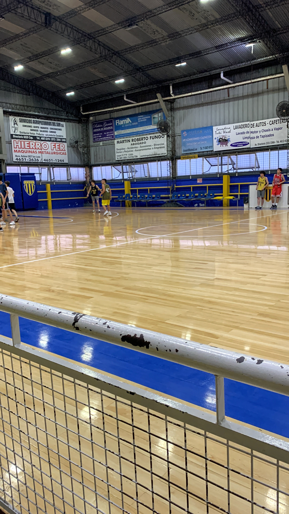
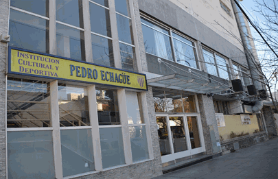
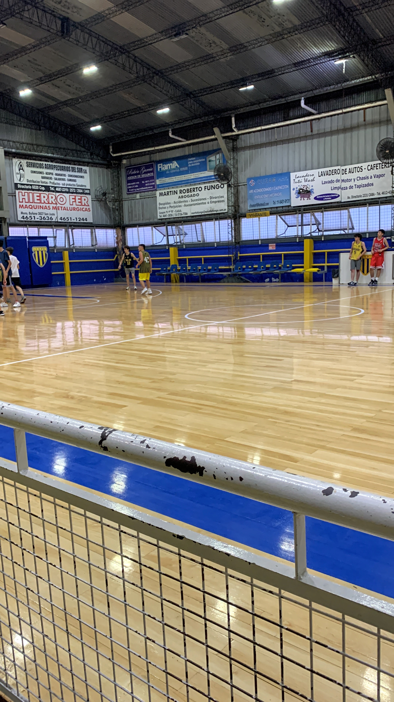

Juego el deporte desde los 6 años, en el Club Pedro Echagüe. Actualmente entreno Martes y Jueves de 18:45 a 21:30, y tengo partido los Sábados o Domingos de 14:30 a 17:00. Soy de San Lorenzo, fui múltiples veces a la cancha a ver los partidos de basquet.
Disfruto mucho de jugar a la compu. Dedico la mayoría de mi tiempo libre a este hobby, en especial si no tengo nada más que hacer. También encuentro que es una gran forma de conectar con mis amigos cuando jugamos juntos o simplemente de hablar mientras cada uno hace lo suyo, aparte de ser una buena forma de desconectar de la realidad un rato y no preocuparme de problemas externos.


Tengo la suerte de viajar a disfrutar de la nieve casi todos los años. Me dá mucha adrenalina y me divierto mucho, aparte que es un hobby que comparto con amigos.